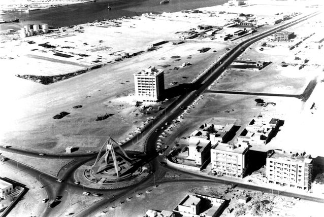
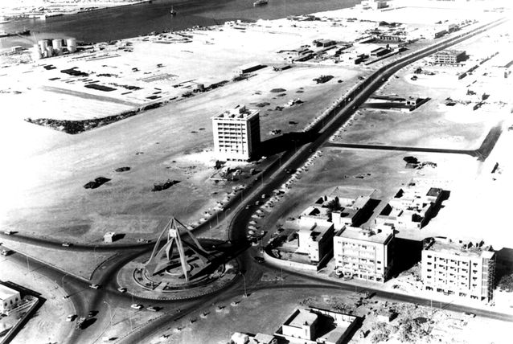
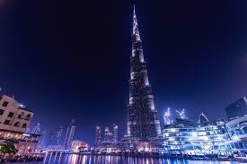

The history of human settlement in the area now defined by
the United Arab Emirates is rich and complex,
and points to extensive trading links between the
civilisations of the Indus Valley and Mesopotamia, but
also as far afield as the Levant. Archaeological finds in the
emirate of Dubai, particularly at Al-Ashoosh, Al Sufouh and the notably rich trove from Saruq Al Hadid
show settlement through the Ubaid and Hafit periods, the Umm Al Nar a
nd Wadi Suq periods and the three Iron Ages in the UAE. The area was known
to the Sumerians as Magan, and was a source for metallic goods, notably copper and bronze.
The area was covered with sand about 5,000 years ago as the coast
retreated inland, becoming part of the city's present coastline.
Pre-Islamic ceramics
have been found from the 3rd and 4th centuries.Prior
to the introduction of Islam to the area,
the people in this region worshiped Bajir (or Bajar).After the spread of Islam in the region,
the Umayyad Caliph of the eastern Islamic world invaded south-east Arabia and drove out the Sassanians.
Excavations by the Dubai Museum in the region of Al-Jumayra (Jumeirah) found several artefacts from the Umayyad period.
An early mention of Dubai is in 1095 in the Book of Geography by the
Andalusian-Arab geographer Abu Abdullah al-Bakri.[citation needed] The Venetian pearl
merchant Gasparo Balbi visited the area in 1580 and mentioned Dubai (Dibei) for its pearling industry.
Establishment of modern Dubai


 

This is the picture of the first mosque in Duabi
After years of exploration following large finds in neighbouring Abu Dhabi, oil was eventually discovered in territorial waters off Dubai in 1966, albeit in far smaller quantities. The first field was named "Fateh" or "good fortune". This led to an acceleration of Sheikh Rashid's infrastructure development plans and a construction boom that brought a massive influx of foreign workers, mainly Asians and Middle easterners. Between 1968 and 1975 the city's population grew by over 300%.[48] As part of the infrastructure for pumping and transporting oil from the Fateh field, located offshore of the Jebel Ali area of Dubai, two 500,000 gallon storage tanks were built, known locally as 2Kazzans2,[49] by welding them together on the beach and then digging them out and floating them to drop onto the seabed at the Fateh field. These were constructed by the Chicago Bridge and Iron Company, which gave the beach its local name (Chicago Beach), which was transferred to the Chicago Beach Hotel, which was demolished and replaced by the Jumeirah Beach Hotel in the late 1990s. The Kazzans were an innovative oil storage solution which meant supertankers could moor offshore even in bad weather and avoided the need to pipe oil onshore from Fateh, which is some 60 miles out to sea.[50]
The new face of Dubai